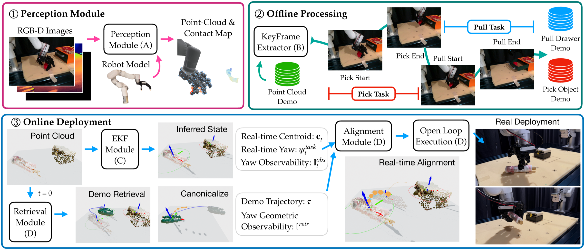

1-Minute Overview Video
Captioned summary of the method, tasks, and real-world results.
Method Overview
DexMulti decomposes multi-stage manipulation into a retrieve-align-execute pipeline. Given a new scene, the system retrieves the most similar demonstrated skill based on object geometry, aligns the skill trajectory to the current object pose using an uncertainty-aware estimator, and executes the aligned action sequence.

Task Suite
Three multi-stage dexterous tasks where the robot must keep one object secure while completing a second interaction.
Grasp + Pull
Maintain a grasp, pull open the drawer, and place the held object inside.
Grasp + Open
Hold an object, open the target container, and complete the place-in-container step.
Grasp + Grasp
Sequentially acquire two objects without releasing the first grasp.
Quantitative Results
Success rates (%) on training objects (overall) and held-out test objects. Click any cell to view all trial rollouts for that task/method combination.
Training Objects (Overall)
| Method | Grasp + Pull | Grasp + Open | Grasp + Grasp |
|---|---|---|---|
| DexMulti (Ours) | 64.7 22/34 | 67.6 23/34 | 44.4 12/27 |
| Object-Centric DP3 | 20.6 7/34 | 35.3 12/34 | 29.6 8/27 |
Test Objects (Generalization)
| Method | Grasp + Pull | Grasp + Open | Grasp + Grasp |
|---|---|---|---|
| DexMulti (Ours) | 77.4 24/31 | 71.0 22/31 | 20.0 3/15 |
| Object-Centric DP3 | 25.8 8/31 | 38.7 12/31 | 46.7 7/15 |
Comparison with Demonstration-Free Methods
Demonstration-free approaches such as reinforcement learning or grasp synthesis rely on carefully engineered reward functions and initializations, which becomes increasingly difficult for multi-stage tasks.
Failure: Stable Grasp, Poor Task Compatibility
The method finds a stable grasp on the bottle, but the grasp is not compatible with the follow-up manipulation.
Success: Task-Compatible Initialization
A different initialization yields a task-compatible grasp. This contrast highlights how strongly demonstration-free optimization depends on initialization.
Robustness to Perturbations
DexMulti remains stable under external disturbances while continuing multi-stage tasks.
Embodiment Transfer
The same approach transfers across mechanically different dexterous hands without retraining.
LEAP Hand vs Allegro Hand
Side-by-side embodiment transfer on Grasp + Pull across two dexterous hands.
Citation
If you find this work useful, please consider citing it.
@inproceedings{jiang2026concurrent,
title = {Concurrent Prehensile and Nonprehensile Manipulation:
A Practical Approach to Multi-Stage Dexterous Tasks},
author = {Jiang, Hao and Wu, Yue and Wang, Yue and
Sukhatme, Gaurav S. and Seita, Daniel},
booktitle = {IEEE/RSJ International Conference on Intelligent Robots
and Systems (IROS)},
year = {2026}
}